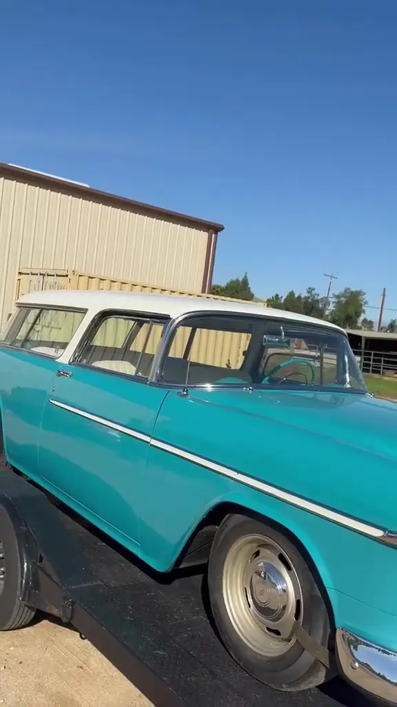
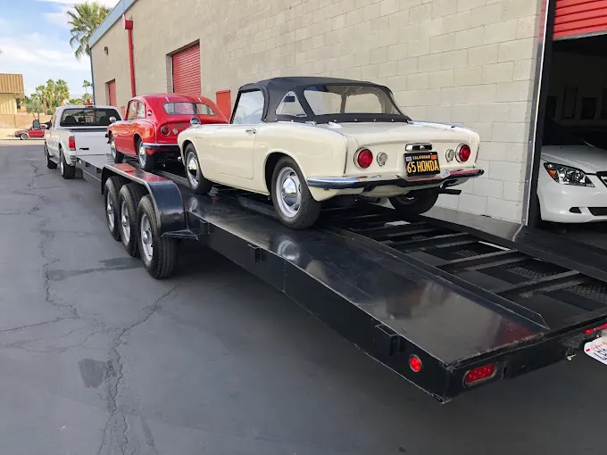
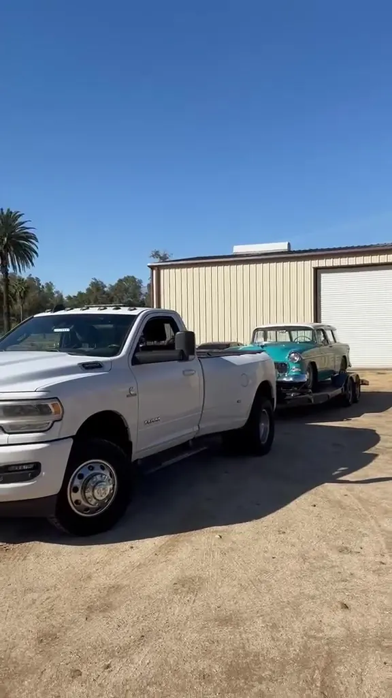

Classic car transportin San Diego
Collector and vintage car transport on a dedicated hauler. Wheel straps, slow loading, one car per trip, and a driver who knows what he is carrying.

Your classic is the only car on the trailer
A classic car is not a commuter car with old paint. Chrome bumpers sit low, original trim breaks if you look at it wrong, and the wrong tie-down point can bend something that cannot be replaced.
That is why Chato's does classic car transport the slow way: one car, a careful load, straps over the tires instead of hooks on the frame, and a straight drive to the delivery address. No terminals, no shuffling between carriers, no other cars loaded above yours.
Classic car transport jobs we handle
- Car shows and cruise nights around San Diego County
- Restoration, paint and upholstery shop runs
- Buying or selling a collector car in another city or state
- Moving a car in or out of storage or a garage
- Auction pickups and deliveries
Recent loads include a 1955 Chevy Nomad, vintage convertibles and modern exotics. Whatever you own, Jose will tell you how he plans to load it before he shows up.
Recent classic and specialty loads
Photos from real Chato's jobs.


How classic car transport works
Tell Jose about the car
Year, make and model, whether it runs, ground clearance, and where it is parked.
Plan the load
He tells you how he will load and strap it, and gives you a price for the trip.
Careful pickup
Photos before loading, straps over the tires, and a final check before rolling.
Straight to delivery
No terminals or transfers. Unloaded at the show, the shop or your garage.
Owners trust Jose with what matters
Real reviews from Chato's Google Business Profile and Yelp. Same story every time: honest price, constant updates, and a driver who treats your RV like his own.
I hired Jose at Chato's Auto Transport to move a classic car across town Escondido. I told him it was ging to be a diffficult pickup backing in off a narrow driveway up a steep dirt driveway at a 90 degrees angle. To assure the feasibility he went out in advance to look at the challenge. He quoted me a very resonable fee and stuck to it. From the first call he kept me informed via text of every move, some with pictures. He was likeable, very easy to work with and very professional.
I hired Jose and my experience was very professional with a fair and reasonable price. He was very punctual and communication was excellent throughout the entire trip.
I needed to get my 2002 Avalon with 190,000 miles to a family member in Los Angeles. The very reasonable price was determined up front. No surprises. Jose provided door-to-door service, kept us updated on his ETA, and took pictures on his arrival. Jose was friendly, trustworthy, and a pro at what he does.
If I could give Jose Luis a thousand stars, I would without hesitation! Truly exceptional towing service! Excellent customer service, professionalism, friendliness, and an incredible willingness to help. You can tell when someone does their job with passion and dedication. 1000% recommended!
I just used Jose's services to move my car from Escondido to Long Beach. It had to be moved today to be put on a ship and I just contacted him yesterday. He took the job at a lower cost than any other quotes. He did it this morning, took photos at pickup and sent them to me, gave me updates on his location as he was driving, and delivered the vehicle to the port ahead of schedule.
Jose was very courteous and communicable throughout the process and his towing skills are "legit". Jose was early to arrive to pickup my car and also able to deliver it ahead of schedule to its final destination. He knows the San Diego area very well. It's clear that Jose loves what he does and is good at it. Highly recommend!
Fast service, great communication, smooth transaction, recommend +++.
Jose was a hero who rescued our boat on a trailer from the side of the freeway in Rancho Bernardo after a trailer axle failure issue. So appreciated that he fit us into his Sunday, communicated clearly on his schedule, and serious problem solving once he got to the boat to figure out how to get the boat/trailer (missing a wheel) onto his trailer.
Classic car transport questions
Do you offer enclosed classic car transport?
Chato's uses an open single-car hauler. Your car is the only vehicle on it, and it goes straight from pickup to delivery, which keeps exposure short. If your car needs fully enclosed transport, ask Jose and he will tell you honestly what fits.
How do you secure a classic car?
With straps over the tires, so nothing pulls on the frame, the suspension or a fresh paint job. The car is loaded slowly and the straps are checked before it rolls.
Can you move a classic that doesn't run?
Tell Jose when you call. Whether it can be loaded depends on the car and the spot it is sitting in, and he will tell you up front what it will take.
Can you take my car to a car show?
Yes. Show and event deliveries are scheduled with time to unload before gates close. Book early for big weekends.
Are you available outside San Diego?
Yes. Classic cars are moved across California and out of state, including pickups from sellers and auctions.
Related services
Moving a classic?
Send a photo of the car and where it is parked. Jose will tell you how he will load it and what it costs.